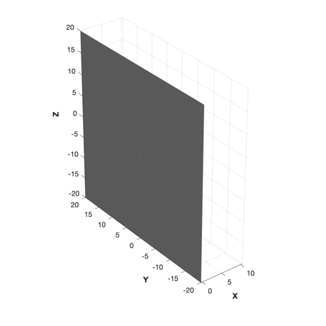
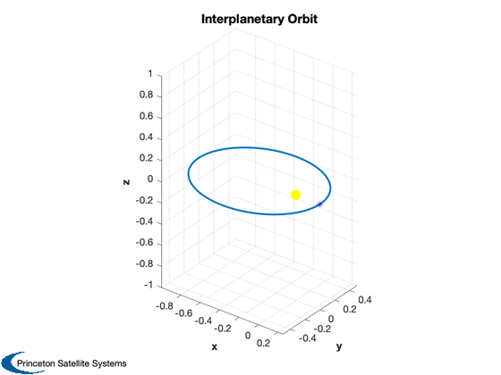
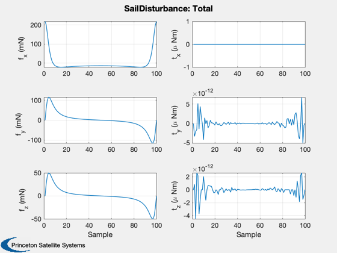
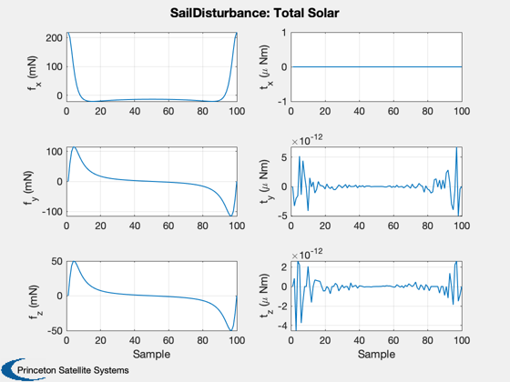

Demonstrate the solar sail disturbance model in heliocentric orbit.
The orbit has an apogee of 1 AU and a perigee of 0.25 AU.
Uses the SailWithBoom CAD model. The sail is sun-pointing. The epoch
is JD 2000.
Functions demonstrated:
QSunPointing
SailDisturbance
Since version 7.
------------------------------------------------------------------------
See also DrawSCPlanPlugIn, Constant, Plot3D, Unit, JD2000, RARP2A,
RARP2E, RVFromKepler, CEcl2Eq, QSunPointing, DisturbanceStruct,
EnvironmentStruct, SailDisturbance, SailEnvironment
------------------------------------------------------------------------
Contents
clear SailDisturbance
Load the sail model
g = load('SailWithBoom.mat');
DrawSCPlanPlugIn('initialize',g);

Create the profile
Parameters for the orbit. We are creating an elliptical orbit
aU = Constant('au');
mu = Constant('mu sun');
rP = 0.25*aU;
rA = aU;
a = RARP2A( rA, rP );
e = RARP2E( rA, rP );
p = [];
[p.r, p.v, t] = RVFromKepler([a,0,0,0,e,0], [], mu );
p.jD = JD2000 + t/86400;
n = length(p.jD);
Plot3D(p.r/aU,[],[],[],'Interplanetary Orbit');
hold on; plot3(0,0,0,'y.','markersize',40)
plot3(p.r(1)/aU,p.r(2)/aU,p.r(3)/aU,'b*')

Vectors must be in ECI
c = CEcl2Eq;
p.r = c*p.r;
p.v = c*p.v;
Quaternion (always sun pointing)
p.q = QSunPointing( -Unit(p.r) );
core and the boom. The core is defined as body 1 in the CAD file
p.angle = zeros(2,n);
p.axis = [1 0;0 1;0 0];
p.body = [2 2];
Create the data structure
Get default structure for disturbances and environment
d = DisturbanceStruct;
d = EnvironmentStruct( d );
Turn on aerodynamics
d.aeroOn = 0.0;
Turn off albedo
d.albedoOn = 0.0;
Turn on solar
d.solarOn = 1.0;
Turn off magnetic torques
d.magOn = 0.0;
Turn off (planetary) radiation
d.radOn = 0.0;
Turn off gravity gradient
d.ggOn = 0.0;
Orbiting the sun
d.planet = 'Sun';
The inputs are ( cad model, profile structure, function control structure )
e = SailEnvironment( d.planet, p, d );
SailDisturbance( g, p, e, d );
 